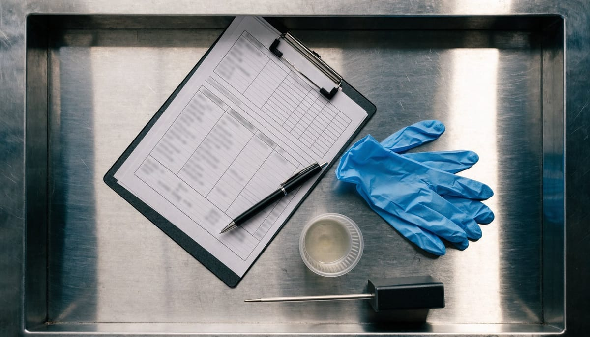

Registro de calidad: qué debe incluir y cómo llevarlo

Registro de calidad: qué debe incluir y cómo llevarlo
El registro de calidad es uno de esos elementos que, en apariencia, puede parecer un simple trámite administrativo. Sin embargo, quien lleva tiempo trabajando en calidad alimentaria sabe perfectamente que una auditoría se gana o se pierde según el estado de los registros. Tener los procesos bien diseñados no es suficiente si no queda evidencia documentada de que se aplican día a día. Este artículo te explica qué debe incluir un buen sistema de registros, cuáles son los errores más habituales y cómo dar el salto a la gestión digital sin complicarte la vida.
Qué es un registro de calidad y por qué las auditorías se ganan o se pierden por ellos
Un registro de calidad es cualquier documento que proporciona evidencia objetiva de que una actividad se ha realizado, un control se ha ejecutado o un resultado se ha obtenido. En el sector agroalimentario, estos registros son la columna vertebral del sistema de gestión: sin ellos, todo lo demás —los procedimientos, los planes, los protocolos— se convierte en papel mojado.
Cuando un auditor llega a tu planta, no evalúa únicamente lo que le cuentas. Evalúa lo que puedes demostrar. Y la única manera de demostrar que un control se ha realizado correctamente es mostrar el registro correspondiente, debidamente cumplimentado, con fecha, firma y resultado. Tal y como establece el Reglamento (CE) 178/2002 sobre legislación alimentaria general (Reglamento [CE] 178/2002, 2002), los operadores deben ser capaces de demostrar la trazabilidad de sus productos e identificar cualquier problema en la cadena alimentaria. Sin registros sólidos, esa demostración es imposible.
Más allá de la auditoría, los registros tienen un valor operativo enorme: permiten detectar tendencias, anticipar problemas y tomar decisiones basadas en datos reales. Una desviación de temperatura que aparece puntualmente en un registro puede parecer anecdótica; si aparece de forma recurrente, es una señal de alerta que debería traducirse en una acción correctiva. Eso solo es posible si los datos están bien registrados y son fácilmente consultables.
Los registros que no pueden faltar: APPCC, control de proceso, incidencias y no conformidades
Cuando hablamos de registros de calidad alimentaria, hay una serie de categorías que resultan imprescindibles en cualquier sistema de gestión serio. A continuación, te detallamos las más críticas:
Registros del sistema APPCC. El Análisis de Peligros y Puntos de Control Crítico exige que cada punto de control crítico (PCC) quede documentado. Esto incluye los límites críticos establecidos, las mediciones realizadas, las acciones correctoras aplicadas cuando se detecta una desviación y la verificación del sistema. Sin estos registros, el plan APPCC no tiene valor legal ni práctico. El Reglamento (CE) 852/2004 relativo a la higiene de los productos alimenticios (Reglamento [CE] 852/2004, 2004) establece expresamente la obligación de mantener documentación suficiente que acredite la aplicación correcta de los procedimientos basados en el APPCC.
Registros de control de proceso. Temperaturas de almacenamiento y transporte, tiempos y temperaturas de tratamientos térmicos, parámetros de envasado, control de alérgenos, limpieza y desinfección… Todos estos controles de proceso deben quedar registrados con periodicidad, identificando quién los realizó y cuál fue el resultado obtenido.
Registros de incidencias. Cualquier situación anómala que ocurra durante la producción —una rotura de envase, un fallo de equipo, una contaminación visual detectada— debe quedar registrada aunque no llegue a convertirse en una no conformidad formal. Estos registros permiten hacer seguimiento de situaciones que, acumuladas, pueden indicar un problema sistémico.
Registros de no conformidades y acciones correctivas. Cuando algo sale mal y se identifica formalmente como una no conformidad, el ciclo completo debe quedar documentado: descripción del problema, causa raíz identificada, acción correctiva aplicada, responsable y plazo, y verificación de la eficacia. Este tipo de registro es uno de los que más atencion recibe durante cualquier auditoría, porque demuestra que el sistema no solo detecta problemas, sino que los resuelve.
Además de estos, no hay que olvidar los registros de formación del personal, de calibración de equipos, de proveedores homologados y de quejas de clientes. Un sistema de gestión documental completo articula todos estos registros de forma coherente y accesible.
El problema del registro en papel: se pierde, se rellena tarde y no se puede auditar en tiempo real
Durante años, la industria agroalimentaria ha trabajado con registros en papel. Carpetas, hojas de control, formularios impresos… Es un sistema que funciona, pero que arrastra una serie de problemas que, con el tiempo, acaban pesando demasiado.
El primero es la pérdida de documentos. Un registro que no se encuentra es un registro que no existe. En una auditoría, buscar desesperadamente una hoja de control de temperatura de hace tres semanas es una situación que ningún responsable de calidad quiere vivir.
El segundo problema es el relleno tardío. En entornos de producción con mucha carga de trabajo, es habitual que los operarios anoten los controles al final del turno, reconstruyendo de memoria lo que ocurrió horas antes. Esto compromete la fiabilidad del dato y puede generar inconsistencias que un auditor experto detecta con facilidad.
El tercer problema es la imposibilidad de auditar en tiempo real. Con registros en papel, el responsable de calidad solo puede revisar lo que ha ocurrido cuando tiene el papel delante. No puede detectar una desviación en el momento en que se produce, ni actuar de forma preventiva. La información llega tarde, y a veces llega mal.
A esto se suma la dificultad de analizar datos históricos. Extraer tendencias de cientos de hojas en papel es un trabajo manual tedioso y propenso a errores. La toma de decisiones basada en datos, que debería ser una prioridad en cualquier sistema de calidad moderno, resulta prácticamente inviable con este modelo.
Cómo pasar a registros digitales sin duplicar el trabajo de gestión documental que ya existe
La transición hacia un sistema de registro de calidad digital no tiene por qué ser traumática ni suponer empezar de cero. La clave está en digitalizar los registros que ya existen sin añadir capas adicionales de burocracia.
El primer paso es mapear todos los registros actuales: qué se registra, con qué frecuencia, quién lo rellena y dónde se archiva. Este ejercicio de inventario permite identificar duplicidades, registros obsoletos y vacíos que habría que cubrir. Si quieres profundizar en este proceso, puedes consultar nuestra guía práctica de gestión documental de calidad alimentaria, donde detallamos este enfoque paso a paso.
El segundo paso es elegir una herramienta que se adapte a la realidad de la planta. No sirve de nada implantar un software muy sofisticado si los operarios de línea no pueden usarlo con comodidad desde su puesto de trabajo. Lo ideal es una solución que permita registrar desde dispositivos móviles o tablets, con formularios sencillos e intuitivos, y que envíe alertas automáticas cuando se produce una desviación.
El tercer paso, y quizás el más importante, es formar al equipo. La resistencia al cambio es uno de los principales obstáculos en cualquier proceso de digitalización. Los responsables de calidad deben comunicar con claridad las ventajas del nuevo sistema: menos tiempo buscando documentos, alertas en tiempo real, datos siempre disponibles para auditorías y una visión global del estado del sistema sin necesidad de revisar carpetas.
Un sistema digital bien implantado permite centralizar todos los formatos de registro de calidad en un único entorno, con trazabilidad completa de quién registró qué y cuándo. Esto no solo simplifica las auditorías internas y externas, sino que libera tiempo al equipo de calidad para hacer lo que realmente aporta valor: analizar, mejorar y prevenir.
La gestión documental de registros no es un fin en sí mismo. Es una herramienta al servicio de la seguridad alimentaria y de la mejora continua. Y cuando esa herramienta funciona bien, todo el sistema de calidad gana en solidez y en confianza.
Referencias
- Reglamento (CE) n.o 178/2002 del Parlamento Europeo y del Consejo, de 28 de enero de 2002, por el que se establecen los principios y los requisitos generales de la legislacion alimentaria. (2002). https://eur-lex.europa.eu/eli/reg/2002/178/oj?locale=es
- Reglamento (CE) n.o 852/2004 del Parlamento Europeo y del Consejo, de 29 de abril de 2004, relativo a la higiene de los productos alimenticios. (2004). https://eur-lex.europa.eu/eli/reg/2004/852/oj?locale=es